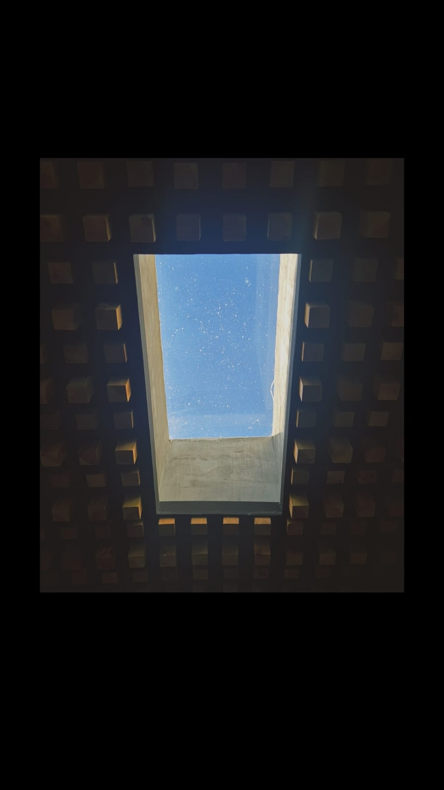
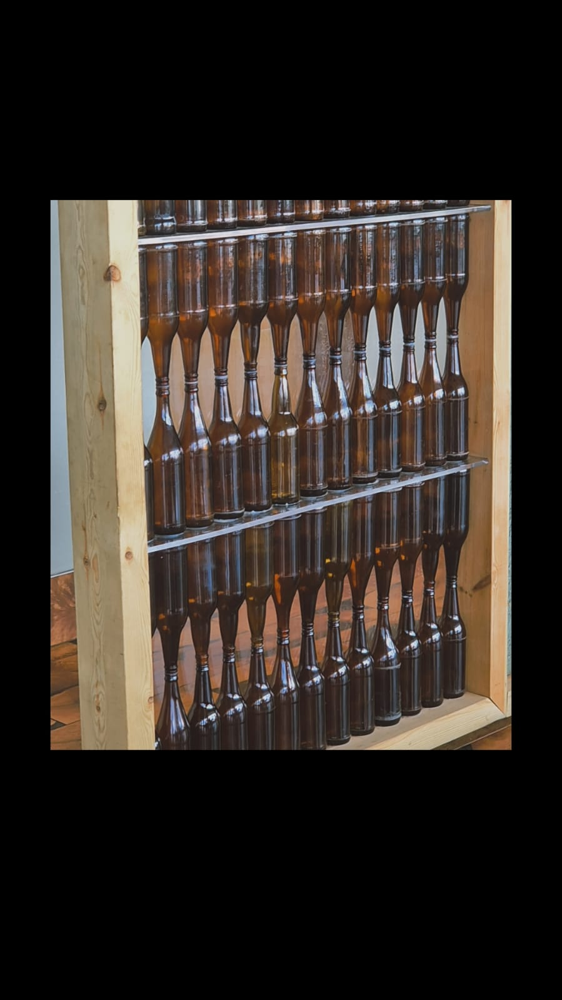
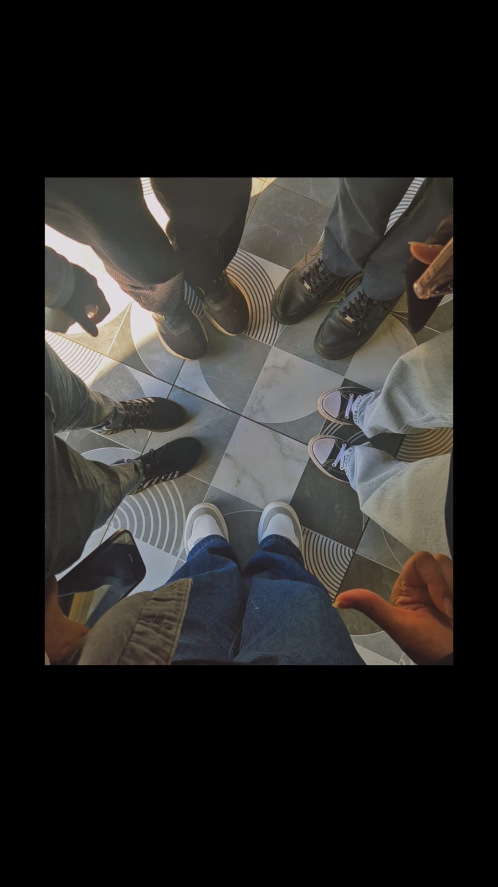
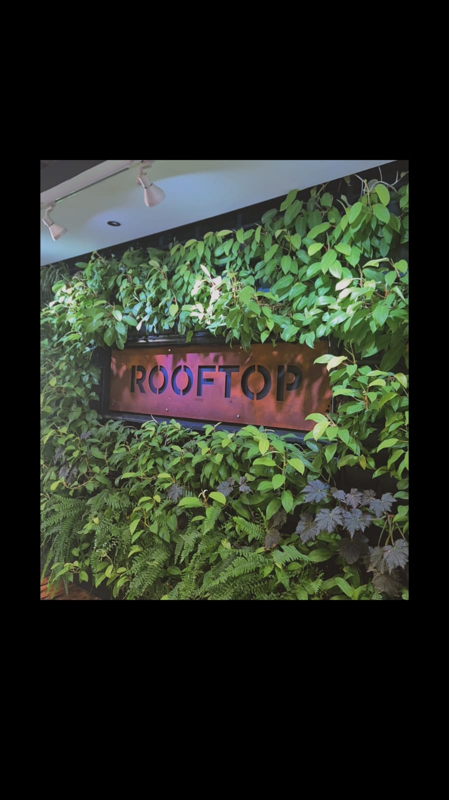
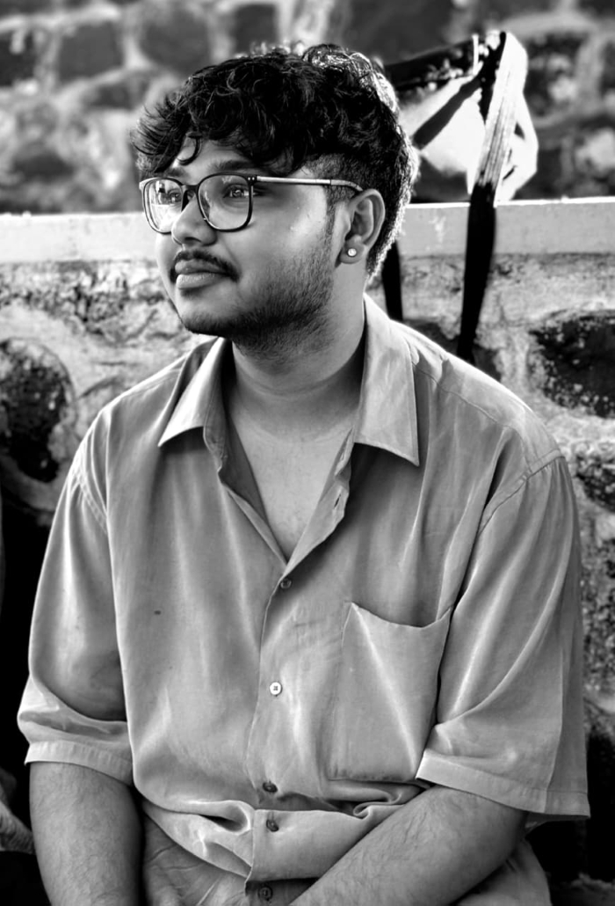

Visual
Storytelling
Capturing the essence of life through professional photography and cinematic videography. Dedicated to preserving authentic moments with technical precision and a unique creative vision tailored for every project.
VIEW WORK



Photography
FROZEN FRAME
Photography allows me to capture atmosphere, emotion and detail through carefully composed visuals. Each image focuses on storytelling, contrast and framing while exploring different perspectives, textures and moments. My work aims to create visuals that feel cinematic, expressive and visually engaging. Inspired by modern editorial aesthetics and visual culture, I experiment with composition, lighting and mood to transform ordinary scenes into immersive visual experiences that leave a lasting impression.
Videography
Motion & Narrative
Videography combines motion, sound and visual narrative to create immersive experiences. Through editing, transitions, pacing and composition, I create videos that communicate mood, energy and emotion while maintaining a clean cinematic aesthetic inspired by modern visual design. My creative process focuses on rhythm, storytelling and atmosphere, using movement and audio to build engaging visual sequences that feel dynamic, intentional and emotionally impactful from beginning to end.

About Me
Hello! My name is Sham Geervan and I am a Web and Multimedia Development graduate from the University of Mauritius, driven by the intersection of technology and visual storytelling. My expertise lies in capturing the world through a lens, blending technical precision with creative flair. With a strong background in graphic design, I approach every project with an eye for composition and a commitment to high-quality digital aesthetics, ensuring that every pixel serves a greater purpose in the narrative.
Photography
Focused on the art of the "still," I specialize in capturing fleeting moments that tell a profound story. From high-contrast editorial shots to candid life photography, I aim for visual depth in every frame. My process involves meticulous attention to lighting and composition, transforming everyday scenes into timeless visual assets that evoke emotion and spark curiosity.
Videography
Motion is where stories truly come alive and breathe. I create cinematic experiences through thoughtful editing, intentional pacing, and dynamic filming techniques. By blending crisp audio with high-fidelity visuals, I ensure every second of footage resonates with the viewer, whether it is a short-form social media edit or a long-form documentary piece.
Where to find me
Leave a Review / Contact Me
Let's get in touch...
Every great project begins with a conversation. Whether you are looking to capture a milestone through professional photography or need cinematic videography to bring a brand story to life, I am here to help translate your vision into high-quality digital assets. My process is collaborative and detail-oriented, ensuring that the final result aligns perfectly with your aesthetic goals. From discussing initial concepts and lighting preferences to planning the finer details of a shoot, I provide a tailored approach for editorial work, events, and creative commercial projects. Feel free to reach out for bookings, collaborations, or simply to inquire about rates and availability—let’s create something timeless together.